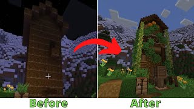

<!DOCTYPE html>
<html lang="en-us"></html>
<html>
   <head>
        <link rel="stylesheet" type="text/css" href="../resources/css/index.css" />
        <meta charset="UTF-8">
        <meta name="viewport" content="width=device-width, initial-scale=1.0">
        <title>Videos</title>
   </head>
   <body>  
      <header>
         <nav></nav>
      </header>
      <main>
         
         <h1>Hardway Videos</h1>
         <p>
            Our server has seen many worlds and people come and go. Some of the folks who have stuck with us have YouTube channels. This site is a collection videos from World 6 with commentaries that go beyond what you will find in the YouTube video descriptions. These introduce our cast of players and give you an entertaining timeline of how this server was built. We plan to keep this world going at least until the next major Minecraft release (1.21) and hopefully well beyond that. We hope you will enjoy reading the story and sampling the videos.
         </p>

         <section>
            <h2>Podzol House Transformation</h2>
            <figure>
               <a href="https://youtu.be/9dvdiU5EQDo?si=CoQo4k-WlgfCv1bo" target="_blank"> 
               
               </a>
               <figcaption>Boove: Podzol Transformation</figcaption>
            </figure>
            <p>
               This is my first transformation video. Mustache built a tower out of podzol. I transformed it 
               to make it beautiful!
               The first thing I did was thing one.
               The next thing I did was thing two.
               The next thing I did was thing three.
            </p>
         </section>
      </main>
      <footer>
         <p>Footer</p>
      </footer>
   </body>
</html>
